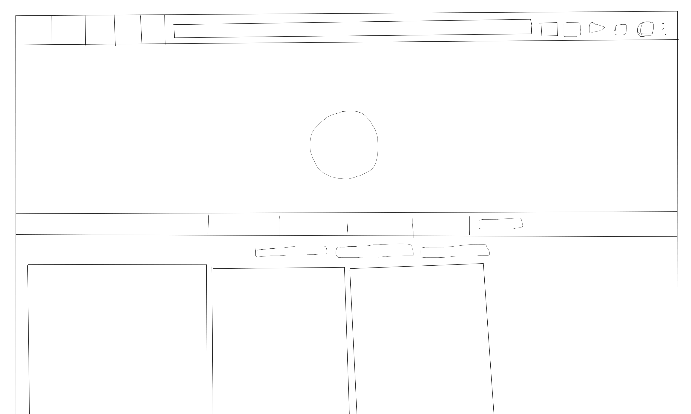
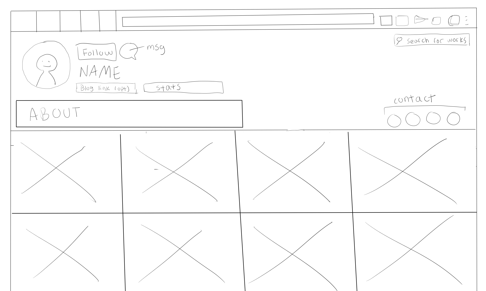

-
Using the favorite website you chose in homework 1, create a wireframe for one page of it using pen/paper, PowerPoint, or any your tool of choice. (use the 'img' tag!) Make sure to let us know what the name of your website is (Use the 'p' tag!)

-
Try to improve the website you've chosen, and create a redesigned wireframe of one page for the same website using the principles of visual hierarchy that you learned from the article.

-
What is the goal of the website? Who is it intended for? How does the design accomplish this? Write 2-3 sentences answering these questions. (Use the 'p' tag again!)
The goal of the website is for artists to share their artwork and easily create an online portfolio. The overall design accomplishes this fairly well, there is no excess navigation since it's pretty straightforward of what the site's main purpose is. The homepage showcases popular artwork in a collage-style setup which you can select specific works to view individually in a separate page.
-
Write 2-3 sentences about what problems your redesign addressed, and how it solved them.
The main problem I came across was an artist's banner taking up almost the entire screen and the excess amount of navigation tabs you see upon going into a user's profile. As a result, it's this long bar with things like 'About', 'Likes', 'Followers', 'Blog', etc and at the very right hand side there is a button to message the artist and follow them. My small redesign of the site consolidates some of these unnecessary tabs and makes more use of the space that is the artist's banner at the top which takes up more than half the page. Using profile interface elements from other popular sites such as Instagram, I prioritized both the message and follow button and moved the artist's biography to being directly visible near the profile picture. Other things such as follows or likes don't really deserve a tab of their own so instead I made them out to be just numbers which you could click on to view the same exact information. Overall I think this is a much better use of space and allows viewers to immediately preview art without having to scroll past a huge banner and empty tabs that lead to nowhere.
NOTE: Make sure to include the wireframe images in the website and don't just put it in your assets folder!
Your wireframes should look something like this: